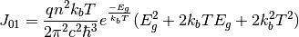

2 diode equation¶
-
solcore.analytic_solar_cells.diode_equation.iv_2diode(junction, options)[source]¶ Calculates the IV curve of a junction object using the 2-diode equation. All parameters needed for the calculation need to be included in the junction object. Series resistance is included at solar cell level, not at junction level. The junction is then updated with an “iv” function that calculates the IV curve at any voltage.
Parameters: - junction – A junction object.
- options – Solver options.
Returns: None.
-
solcore.analytic_solar_cells.diode_equation.calculate_J01(Eg_in_eV, T, n)[source]¶ Calculate the reverse saturation current J01, assumed radiative, considering an absorption equal to 1 above the bandgap. Light trapping is included by considering the refractive index of the material:

Parameters: - Eg_in_eV – Bandgap in eV
- T – Cell temperature
- n – Refractive index of the material
Returns: The reverse saturation current J01
-
solcore.analytic_solar_cells.diode_equation.calculate_J02_from_Voc(J01, Jsc, Voc, T, R_shunt=1000000000000000.0)[source]¶ Calculates J02 based on the J01, Jsc and the Voc. It is just the result of solving the 2-diode equation for J02. Ideality factors n1 and n2 are assumed to be equal to 1 and 2, respectively.
Parameters: - J01 – Reverse saturation current J01, typically the radiative component
- Jsc – Short circuit current (=photocurrent)
- Voc – Open circuit voltage
- T – Temperature
- R_shunt – Shunt resistance (default = 1e15)
Returns: The reverse saturation current J02
-
solcore.analytic_solar_cells.diode_equation.calculate_J02_from_rad_eff(J01, radiative_efficiency, V, T, R_shunt=1000000000000000.0)[source]¶ Calculates J02 based on J01 and a radiative efficiency at a given voltage and temperature. Ideality factors n1 and n2 are assumed to be equal to 1 and 2, respectively.
Parameters: - J01 – Reverse saturation current J01, typically the radiative component
- radiative_efficiency – Fraction of the dark current that is radiative
- V – Operating voltage
- T – Temperature
- R_shunt – Shunt resistance (default = 1e15)
Returns:
-
solcore.analytic_solar_cells.diode_equation.calculate_j02_from_J01_Jsc_reference_radiative_efficiency(J01, Jsc_ref, radiative_efficiency, T)[source]¶
-
solcore.analytic_solar_cells.diode_equation.update_j0(junctions, T, Tref)[source]¶ Updates the reverse saturation currents for the target temperature knowing their values at a reference temperature.
Parameters: - junctions – List of junctions
- T – Target temperature
- Tref – Working temperature
Returns: List of junctions with their saturation currents updated for the new temperatures